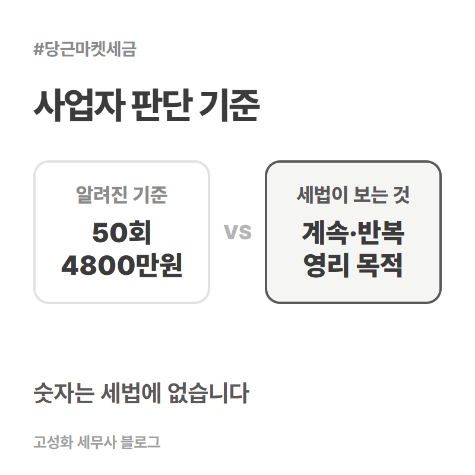
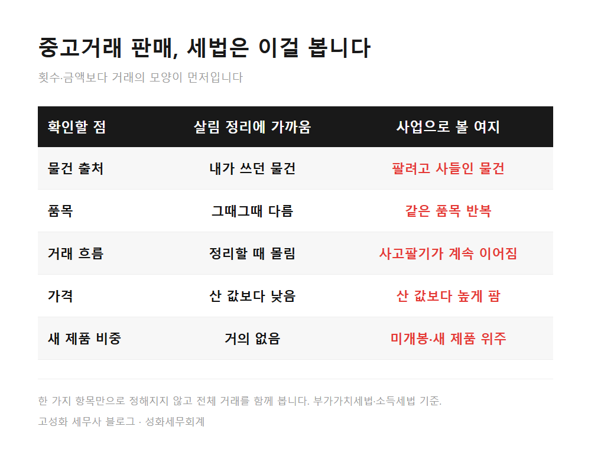

← 세무칼럼 목록
세무 일반

당근마켓 50회 4800만원 넘으면 세금? 실제 판단 기준
당근에 올린 물건이 한 달에 스무 개씩 팔리기 시작하면 이런 말이 들려옵니다.
"1년에 50번, 4,800만원만 안 넘기면 세금 안 나온대."
반만 맞는 말입니다.
내가 쓰던 물건을 정리하는 분이라면 횟수가 많아도 성격이 다르고, 팔려고 사들인 물건을 되파는 분이라면 50번이 안 돼도 사업으로 볼 수 있습니다.
이 글에서 다루는 내용
- 50회·4,800만원은 세법에 적힌 숫자가 아닙니다
- 숫자 아래면 괜찮다는 말이 틀린 이유
- 사업으로 보면 무엇을 해야 하나
한눈에 보기


본문 전체와 근거 조문은 블로그에서 확인하실 수 있습니다.